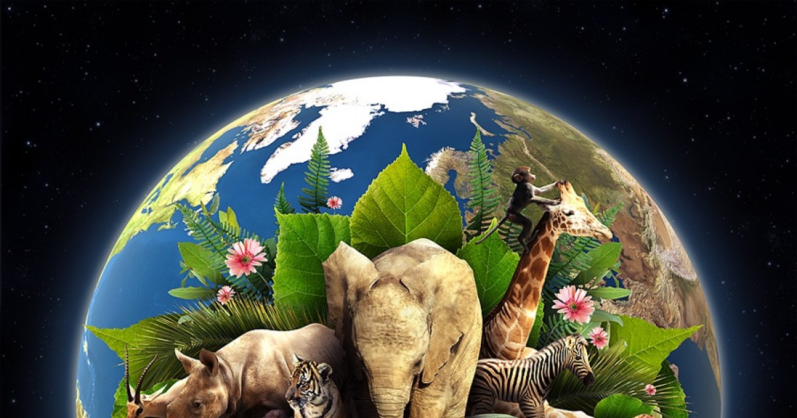

Dia Internacional De La Madre Tierra 22 de Abril


- 

Realizado Por:
ALAN YAIR FERNANDEZ RUIZ
4to "H"
Especialidad
Programacion
Submódulo
Docente
Lic.José Antonio Gómez Hernández
DIA INTERNACIONAL DE LA MADRE TIERRA
4to "H"
Programacion
Lic.José Antonio Gómez Hernández
celebramos el Dia Internacional de la Madre Tierra para recordar que el planeta y sus ecosistemas nos dan la vida y el sustento. Con este dia asumimos, además la responsabilidad colectiva, como nos recordaba la Declaracion de Rio de 1992, de fomentar esta armonia con la naturaleza y la Madre Tierra Este dia nos brinda también la oportunidad de concienciar a todos los habitantes del planeta acerca de los problemas que afectan a la tierra y a las diferentes formas de vida que en él desarollan.
El origen de este día, celebrado mundialmente (aunque no en todas partes), se encuentra en Estados Unidos, durante los 70. Y está asociado, sin duda, a un nombre: Gaylord Nelson. La historia cuenta (a pesar de los curiosos rumores sobre Lenin) que fue este político quién aprovechó un miércoles para organizar una manifestación en defensa del medio ambiente y el ecologismo. Un momento muy estudiado y que venía cociéndose desde la década de los 60 debido a la creciente irresponsabilidad ambiental del gobierno de Estados Unidos. Ya habían gérmenes plantados desde la comunidad científica y estudiantil. Ese miércoles los estudiantes y trabajadores se unieron en una manifestación pacífica que pretendía rendir homenaje y mostrar la preocupación colectiva sobre temas como el medio ambiente, la superpoblación o la conservación de la biodiversidad.
fue todo un éxito. Debido a la participación de dos mil universidades, diez mil escuelas y centenares de comunidades, el gobierno Estadounidense decidió crear Agencia de Protección Ambiental. Este solo fue el comienzo. Durante el 72, la cumbre de la Tierra, en Estocolmo, puso de manifiesto la manifiesta necesidad de una ley medioambiental internacional más comprometida. En los noventa, la celebración del Día de la Tierra ya estaba mucho más generalizada fuera de Estados Unidos y a día de hoy se celebra a nivel mundial.
El domingo pasado 22 de abril se celebró el Día Internacional de la Madre Tierra, desde la CEDU participamos a través de la difusión y compromiso en la búsqueda de un justo equilibro entre las necesidades económicas, sociales y ambientales de las generaciones presentes y futuras, promoviendo una cultura armónica con la naturaleza y Madre Tierra.
Madre Tierra es una expresión común utilizada para referirse al Planeta Tierra en diversos países y regiones, lo que demuestra la interdependencia existente entre los seres humanos, las demás especies vivas y el planeta que todos habitamos.
La Tierra y sus ecosistemas son nuestro hogar. Para alcanzar un justo equilibrio entre las necesidades económicas, sociales y ambientales de las generaciones presentes y futuras, es necesario promover la armonía con la naturaleza y el planeta.
Celebramos el Día Internacional de la Madre Tierra para recordar que el planeta y sus ecosistemas nos dan la vida y el sustento. Con este día, asumimos, además, la responsabilidad colectiva, como nos recordaba la Declaración de Río de 1992, de fomentar esta armonía con la naturaleza y la Madre Tierra.
Este día nos brinda también la oportunidad de concienciar a todos los habitantes del planeta acerca de los problemas que afectan a la Tierra y a las diferentes formas de vida que en él se desarrollan.
El 23 de abril de 2018 se realizó en la sede de las Naciones Unidas en Nueva York, el 8° Diálogo Interactivo sobre Armonía con la Naturaleza, en ocasión de la conmemoración del Día Internacional de la Madre Tierra.
El evento fue convenido por el Presidente de la Asamblea General, Miroslav Lajcak, quien destacó la importancia del Diálogo para intercambiar ideas sobre desarrollo y patrones de producción y consumo sostenibles en armonía con la naturaleza.
Durante la jornada, se discutió sobre cómo los marcos legales y económicos de la Jurisprudencia de la Tierra impactan la implementación de patrones de producción y consumo sostenibles en Armonía con la Naturaleza.
El Diálogo se realizó con el objetivo de inspirar a los ciudadanos y las sociedades a reconsiderar la relación que mantienen con la naturaleza, acorde a la meta 12.8 de los Objetivos de Desarrollo Sostenible con respecto a los patrones de consumo y producción sostenibles.
Mejorar la base ética de la relación entre la especie humana y la Tierra en el contexto del desarrollo sostenible no es solo beneficioso, sino también necesario.
Para que un gobierno y las personas se beneficien de manera sostenible de tales ofertas, todas las partes interesadas deben participar desde el principio. Eso significa que el gobierno nacional, el gobierno local, los pequeños agricultores y otros pueblos marginados, terratenientes, grupos de conservación de la vida silvestre, etc. deben estar en la mesa cuando se tomen decisiones.
Los datos e información ambiental y macroeconómica de buena calidad son esenciales. Los riesgos y beneficios potenciales y los impactos ambientales de cualquier acuerdo deben ser revisados minuciosamente por todos los involucrados. El gobierno y otras partes interesadas necesitan tener la capacidad técnica para equilibrar los diferentes intereses y permitir que se llegue a un consenso con todas las partes para el beneficio de todos, sin dañar el medio ambiente. Esto requiere adoptar un enfoque de todo el sistema, observar el panorama general y tener toda la información para comprender completamente los impactos de los diferentes usos de la tierra. La gestión integrada de ecosistemas, como parte del enfoque de paisajes, ve el medio ambiente como una red compleja de partes conectadas y requiere un enfoque holístico.
Por ejemplo, la tierra que está vallada puede volverse inaccesible para los pastores y sus rebaños de ganado. Ellos podrían perder acceso a pozos de agua en la región, y para llegar a otros podrían tener que tomar una ruta tortuosa, durante la cual muchas de sus cabezas de ganado morirían.